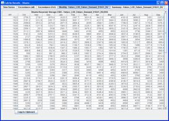
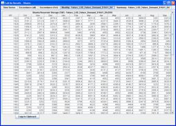

The CalLite model is currently delivered in a single installer file. Installation consists of extracting all files in the archive to a file system location on a Windows XP, Vista, or Windows 7 computer. During installation, a CalLite2.00.exe icon is generated on the desktop. The software is started by double-clicking the icon. Alternatively, user can start the CalLite GUI from start>program>CalLite2.00>CalLite2.00. User can also start the CalLite GUI by double-clicking on the file “CalLiteGUI.exe” in the root directory of your extracted version (Figure 1).
Figure 1. The CalLite GUI executable is named CalLiteGUI.jar.
On startup, you will see the Run Settings dashboard, one of the dashboards (or user interface screens) in the current version of the CalLite GUI. The blue colored dashboards related to user display of model results have tabs with a white background and blue letters, while the remaining dashboards for model input and control have gray tabs and black letters (Figure 2).

Figure 2. Run Settings dashboard in CalLite GUI.
Creating scenarios
The CalLite GUI automatically loads a default scenario when starting up. We can look at the model settings by moving among the input dashboards. For the first scenario, we will use current sea level and future land use (set with option buttons on the Hydroclimate dashboard), assume future demands (full Table A for SWP and Full Contract for CVP, set with option buttons on the Demands dashboard) and apply only the D-1641 regulations (check all the boxes on the D-1641 subpanel in the Regulations dashboard)

Figure 3. Select “Future Land Use” and “Base (Current Sea Level)” options on Hydroclimate dashboard.

Figure 4. Set SWP demands to “Future” and CVP demands to "Full Contract" on Demands dashboard.
In the Regulations dashboard, numerical criteria associated with certain regulatory
options are presented in an adjoining table. Although we are not changing the values in those
tables at this time, we are able to edit the tabulated values and save them in our scenario
if needed. Default values for the tables can be restored by selecting the Default option in
the right-hand panel of the Regulations dashboard.
Associated criteria tables will always be shown when you right-click on a regulatory option. They will also be shown when you turn a given option on.

Figure 5. Turn on all D-1641 regulation constraints in Regulations dashboard.
Make sure the Biological Opinion RPA options are all turned off, then save the scenario to a new file. This can be done by pressing the Save As… button on the Run Settings dashboard, or with the menu command “File|Save As…”.(Figure 6).

Figure 6. Preparing to Save scenario after ensuring that the BO RPA options are all turned off.
When the file dialog appears, type in the descriptive scenario name “Future_LOD_Future_Demand_D1641”. Your scenario setting will be stored in the Scenarios subdirectory in the file Future_LOD_Future_Demand_D1641.CLS and the model results will be placed in the file Future_LOD_Future_Demand_D1641_DV.DSS, also in the Scenarios directory.

Figure 7. Saving the D-1641 scenario.
On the Run Settings dashboard, you may enter text in the Scenario Description box to describe the selections that you have just made. Run the model for the D-1641 scenario settings by either pressing “Run Scenario” on the Run Settings dashboard, or with the menu choice “File|Run”. The CalLite GUI creates a set of model input files in the Run directory based on the settings in the currently-loaded scenario and then executes the model. The WRIMS Execution window shows the progress of the run. It can be minimized, moved, or covered up.

Figure 8. Model execution status is presented in the WRIMS Execution window.
Next we’ll create a second scenario that adds the Biological Opinion regulatory constraints
to the scenario on top of the D-1641 regulations. We do this by turning on these options on
the Biological Opinion RPAs subpanel in the Regulations dashboard. After this, save the
scenario as Future_LOD_Future_Demand_D1641+BO.CLS and run the model to create
Future_LOD_Future_Demand_D1641+BO_DV.DSS.

Figure 9. Turning on the Biological Opinion RPAs in the Regulations dashboard
Viewing Results
We now have two sets of model results that can be used to demonstrate the display capabilities of the CalLite GUI. Let’s start with loading the D-1641 results by moving to the Quick Results dashboard and pressing the Add button in the Scenarios panel at the upper left. Select the file Future_LOD_Future_Demand_D1641_DV.DSS, which contains the model results for the D-1641-only scenario, and press the Open button in the dialog.

Figure 10. Loading scenario results for viewing.
The loaded scenario is now shown in the list of scenarios with a (selected) option button
next to it. When a scenario in the list is selected, it will be used as the baseline scenario
for comparison and difference, and will also be the scenario deleted if the Delete button is
pressed.
We’ll also create and execute a custom report that shows time series and exceedance plots as well as monthly tables and summary data for Shasta storage:
The report components are presented in separate tabs of a single window; select a tab to see each component.

Figure 11. Turn on display choices and dataset to view in your report, then add to list .


Figure 12. CalLite GUI reports can include time-series and exceedance charts.


Figure 13. Right-clicking on a chart brings up a menu that allows printing and cut-and-paste of supporting data into (e.g.) Excel. Charts can be copied as a bitmap with Ctrl-C.
 

Figure 14. CalLite GUI reports can also include monthly and summary tables.
Right-clicking on any quick result on the Storages and Flows, Shortages/Flow Objectives, or Water Management Actions subpanels will generate an “instant” report based on the current settings in the Display Panel.
After closing the CalLite Results window from the previous step, try right-clicking on the text “Trinity River” (or the associated checkbox). This will bring up Trinity River flow results, which includes a secondary time series. All charts support zooming (hold down the left mouse button and select the zoom area) and panning (hold down the left button and the Control key, then move the mouse) to better view areas of interest. To zoom out, click and drag the cursor to the upper left.

Figure 15. Trinity River flow time series with minimum instream flow requirement as a secondary time series (dashed blue line).

Figure 16. Annual accumulations are calculated from monthly values for all flow results. In the monthly table, the annual accumulated flow is presented as an additional column.
Scenario results can be compared by overlaying results using the Comparison option in the Scenarios panel.
Note that if you just click “Display List” without adding the new Comparison report, you will get a “Base” report that only shows information from the baseline run indicated by the selected option button in the scenario list.

Figure 17. Quick Results dashboard prior to displaying new report. There are two scenarios in the scenario list, with the D-1641 scenario selected as the base.


Figure 18. Comparison plots show results from multiple scenarios on the same charts.
The difference between scenarios can also be plotted and tabulated. Let’s change the selection from “Comparison” to “Difference” and right-click on the Shasta checkbox.

Figure 19. Quick Results dashboard prior to running Difference report.


Figure 20. Difference charts will change when the base scenario is changed in the scenario list.
External report templates for generating convenient sets of tables and charts in PDF format are accessible from the External PDF dashboard. Use the D-1641 and D-1641+BO scenario result files with the callite_scenario_comparison.inp template to view an example.


Figure 21. The CalLite GUI allows us to rapidly generate report-quality charts and tables from different sets of model results.